A garden of light on a church in scaffolding
I propose one free public evening in winter 2027 where HAGEN, my real-time night garden, grows across the white restoration cloth of Johanneskirken.
For a short period the church on Nygårdshøyden is wrapped in cloth, and the cloth works as a screen that will not be there again. I want to use that window to bring a quiet work of digital art out into the city, where anyone walking past can stop, stay and take part.
The proposal has two stages. The church evening in winter comes first, and in autumn 2027 the same garden moves into Muséhagen, onto real trees and paths.
Johanneskirken
Student residence, Bergen, October 2026
Johanneskirken, wrapped for restoration
The church stands high above the city centre and can be seen from far away. While it is restored, its walls and tower are covered in tall white panels.
The projection uses the cloth facing the open area before the church, where people can gather and stand at a safe distance from the projector. Nothing is fixed to the building. All equipment stands on the ground and is removed the same night.
Trees in front of the church throw shadows on the cloth. They become part of the image: the light starts where the shadows meet the wall.
The covering comes down when the tower work is finished in 2027. That sets the timing of this proposal.
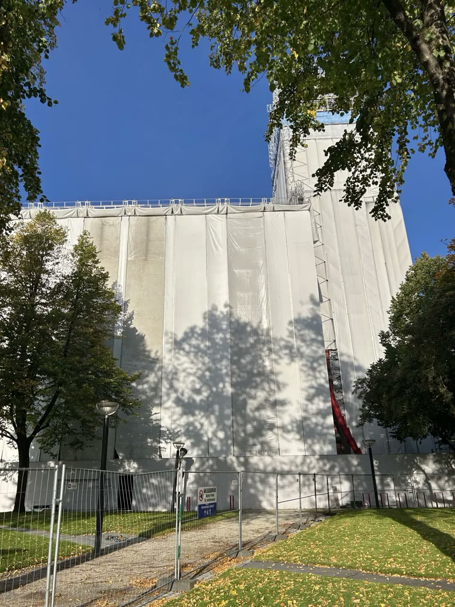
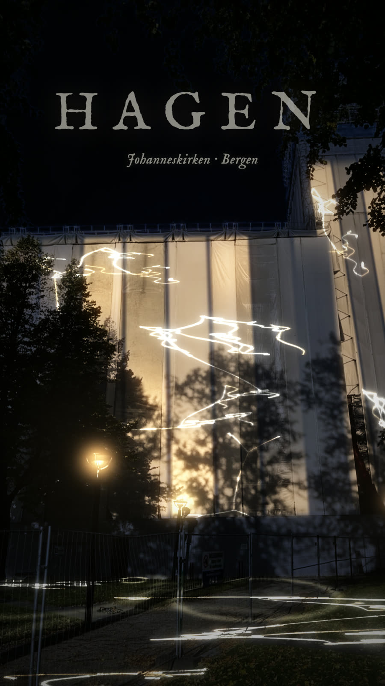
The church today. Press Night for the rendering.
Dark cloth, slow light
Most of the cloth stays dark. Fine roots in amber and soft green rise from the ground and climb the panels, and short lines of text surface among them and fade again.
A clap or a voice from the street makes the roots flare. When the crowd goes quiet, the garden slows down and new lines appear. The pace is calm, closer to an evening walk in a garden than to a light show, so people can stay for two minutes or for an hour.
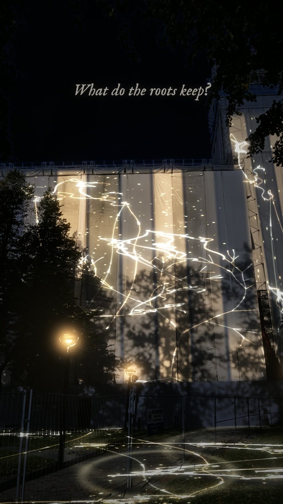
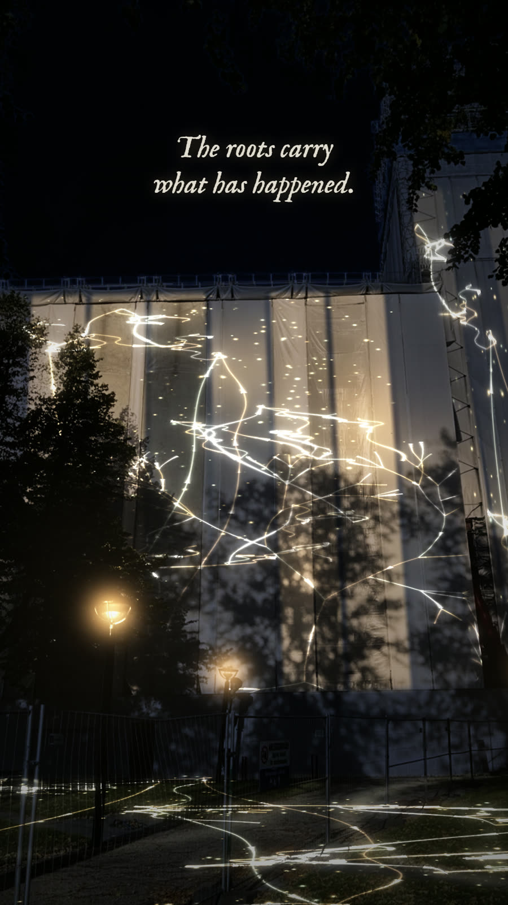
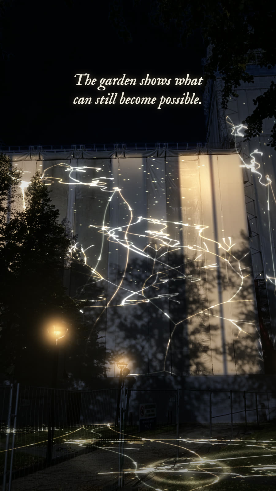
Renderings built on a photograph of the church taken by day.
Already tried on a façade
The first outdoor test took place in October 2026 on the dark green wall of a student residence in Bergen. The Center for Digital Narrative at UiB provided the projector.
The wall was fitted in the mapping tool with every window masked, and the garden grew across it in real time. Seen from across the street, the roots and mushrooms held up well on a dark surface. Light from the windows cut into the image. The lessons for the church are a fixed projector position, a small crew, control over the light around the surface, and visuals tuned to the brightness of the projector used.
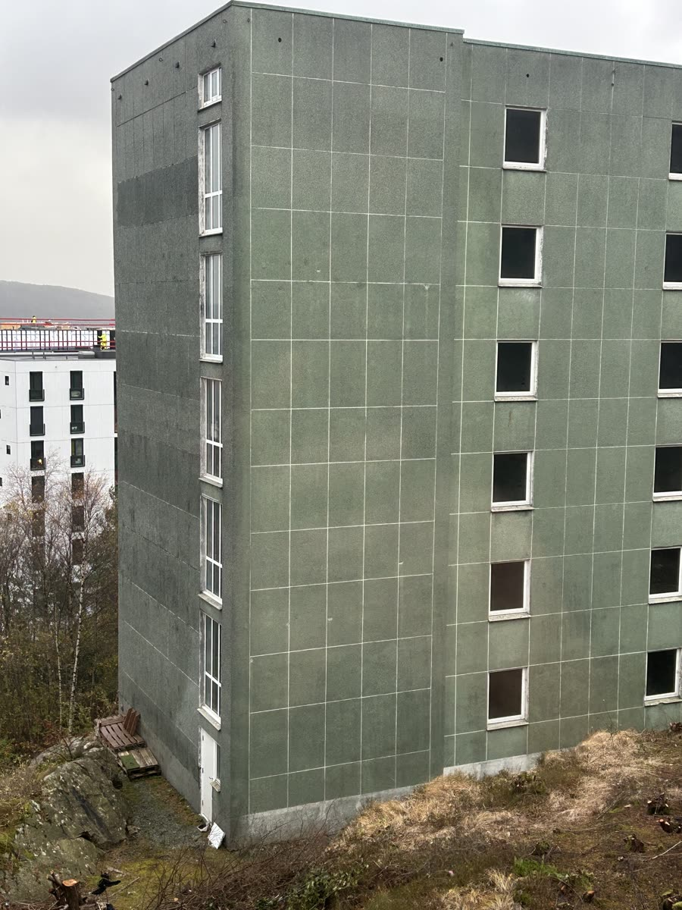
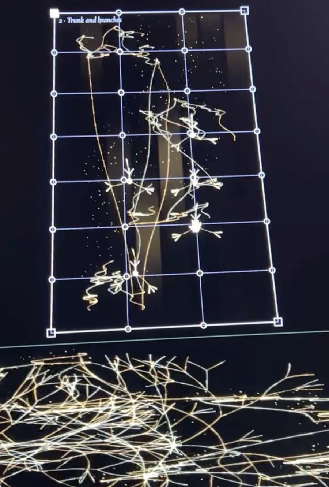
Phone documentation from the tests.
From laptop to church wall
The garden is drawn live by a laptop and sent to a projector. A mapping tool bends the image to fit the cloth, and an outdoor microphone lets the garden hear the street.
Everything runs locally on one machine, with no internet connection needed on site.
The visuals are programmed for the projector that is actually installed. Brightness, contrast and line thickness are tuned to its light output, so the image on the cloth is as strong and clear as that projector allows.
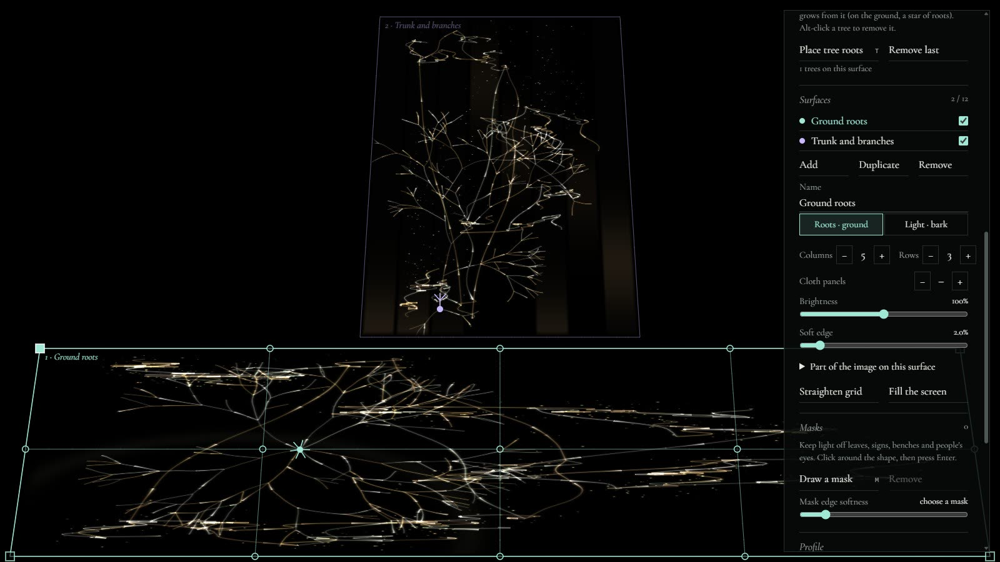
The mapping tool.
The evening, step by step
- The projector is fixed on a stand facing the covering, protected from rain.
- After dark, a white grid goes up on the cloth and is pinned to its corners.
- The grid is bent to follow the seams and folds of the covering.
- Anything that should stay dark, such as street lamps, signs and the fence, is masked out.
- Crowns of light are placed where the trees' shadows meet the cloth.
- The microphone is tuned on site. The night test shows how well it can tell voices and claps apart from traffic.
- The setup is saved, the controls are hidden, and the garden runs for the evening.
- A single key blacks out the image instantly.
Open to anyone passing by
The evening is free and needs no ticket, app or device. People take part with their voice, a clap or by waiting quietly. The microphone hears sound, not bodies, so silence is something the whole crowd makes together.
A small sign at the site explains, in Norwegian and English, that the garden listens and how to make it respond. Visitors can watch from the street or come closer. Step-free access to the viewing area will be checked with the site before the date is set.
On the evening I will talk with visitors and write down what they say about the experience by hand. These notes will shape the version for Muséhagen.
Safety
The projector stands behind a barrier and is aimed up at the cloth, so nobody can look into the beam at close range. Cables run along the edge of the area under cable covers, and nothing crosses a walking route. Power comes from an outlet agreed with the site, through outdoor-rated leads with a residual current breaker.
Two people are on site from setup to takedown, one of them watching the audience area at all times. A first aid kit and a torch are at hand. The viewing area is lit enough to walk safely, and wet or uneven ground is marked or closed off.
The evening is cancelled or moved to the reserve date in strong wind or heavy rain. Liability insurance for the event is arranged before the date.
Privacy
The microphone measures sound levels only. No sound or image is recorded, stored or sent anywhere. Documentation photos are taken so that individual visitors cannot be recognised.
Leave no trace
Nothing touches the church or its covering. All equipment is set up and taken down on the same evening, and the area is left as it was found.
Down the hill, into Muséhagen
Rendering Muséhagen at night. Frames from my own footage of the garden, turned to night, with roots of light growing over the ground and up into the trees.
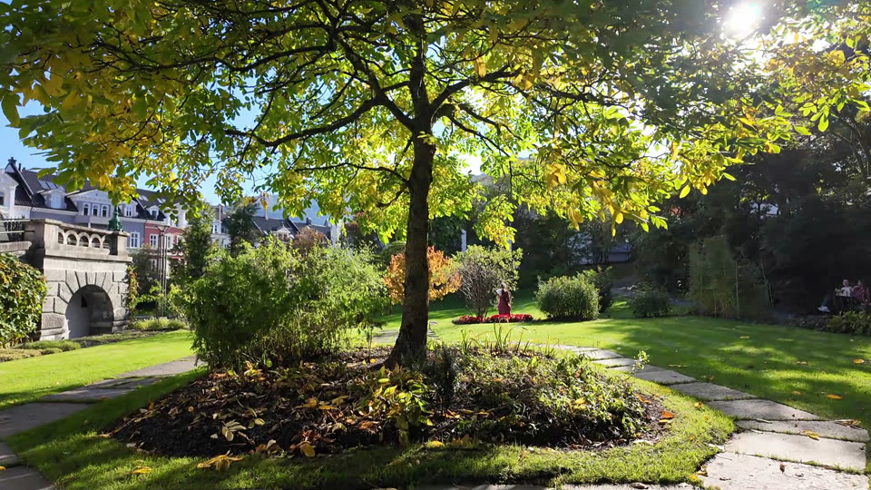
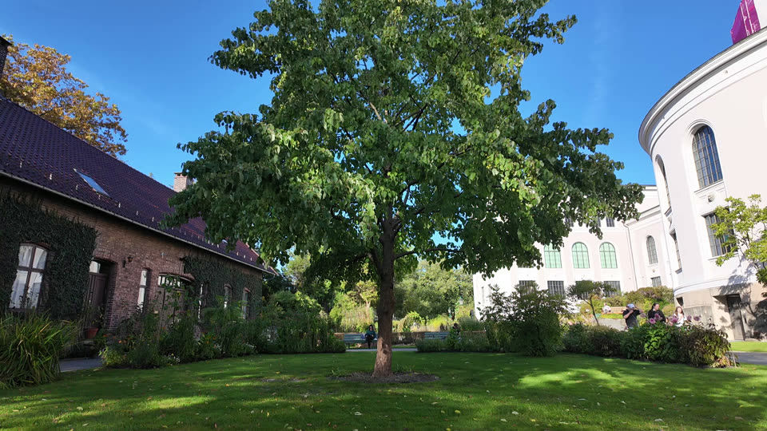
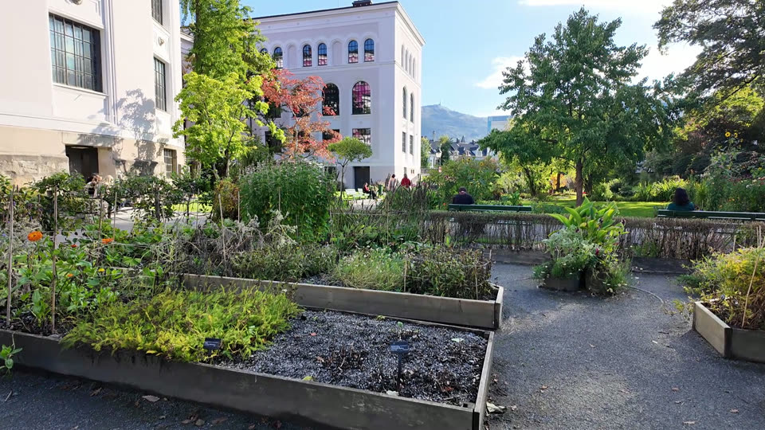
Muséhagen today, 30 September 2026.
After the church, the garden moves a few minutes down the hill into Muséhagen, the botanical garden beside the University Museum. Here the light lands on real trees, paths and soil.
Visitors walk the garden paths after dark and meet the work at a few stops along the way: roots of light spreading over the ground, crowns of light growing up real tree trunks, and a quiet place where lines of text appear if people wait.
Each stop has its own small projector, and the edges of neighbouring images are blended so the light reads as one garden. I would plan the installation with the museum gardeners, subject to their agreement, so light, cables and visitors do not harm the plants. It runs over several dark autumn evenings.
What the church evening teaches
The single evening on Johanneskirken is the test for this stage. It shows how bright the image must be, how people respond to sound and stillness, and how the setup holds up outdoors. Muséhagen is then planned from those results.
What stage two needs
Access and power in the garden, two or more projectors with blended edges, weatherproof boxes along the paths, and a partnership with Universitetsmuseet i Bergen.
What will grow on the trees
The garden itself, recorded in real time.
What each partner is asked, and what they get
| Partner | What is asked | What they get |
|---|---|---|
| Bergen kirkelige fellesråd | Permission to project on the restoration cloth for one evening, access to power, and contact with the restoration team about timing. | A free public artwork on the church during the restoration, with documentation they may use. |
| Bergen kommune | Advice on whether the evening needs a permit for use of public space, and support through the arts and culture grant. | A free, low-impact public art event on Nygårdshøyden that is open to everyone. |
| Universitetsmuseet i Bergen | Access to Muséhagen after dark for stage two, power along the paths, and advice from the gardeners on protecting the plants. | A new way for visitors to meet the garden at night, built around the museum's own collection. |
| Center for Digital Narrative, UiB | A cooperation on projectors and technical equipment, and an academic home for documenting the work. | A public event and documentation material about site-specific digital narrative in Bergen. |
Practical facts
| Question | Answer |
|---|---|
| When and how long | One evening in winter 2027, about three hours after dark, with a reserve date. Muséhagen: a few evenings in autumn 2027. |
| Footprint | One projector on a stand with a barrier, a table for the laptop, and a small sign. Stage two adds a few small projectors along the paths. |
| Power | One ordinary outlet for the church evening. The exact load is given once the projector is chosen. |
| Sound | No loudspeakers at the church. The work listens and does not add noise to the neighbourhood. |
| Light spill | The image is masked to the cloth, so light does not fall on windows, the street or neighbouring buildings. |
| Audience | People passing by and invited guests. Capacity is agreed with the site before the date. |
| Accessibility | No ticket, app or device needed. Step-free access to the viewing area is checked with the site. |
| Insurance and safety | Liability insurance is arranged before the date. Two people on site at all times. |
| Data | No recording or storage of sound or images of visitors. |
| Contact | Ingrid Ormevik, artist and project lead. |
Where the garden could go next
These ideas are not part of this application. They are directions that the church evening and Muséhagen could open up, and each would need its own testing and safety plan.
A night walk with headlamps
Visitors walk through Muséhagen in the dark wearing headlamps. Where a beam lands on the ground, roots of light start to grow from that spot, and several visitors together can grow a shared network across the path.
Safety questions: walking in the dark on wet paths, group size and guides, headlamps that do not dazzle other visitors, and keeping people on the paths so the plants are not trampled.
Rain-reactive projection mapping
Bergen's rain becomes part of the work. A rain sensor or weather data changes the projection, so the roots drink, swell and branch more on wet evenings and rest when the weather is dry.
Safety questions: waterproof housings for projectors and electronics, outdoor-rated power, and slippery surfaces for the audience.
Two stages in 2027
| When | Milestone |
|---|---|
| November to December 2026 | Contact with Bergen kirkelige fellesråd, the University Museum and CDN about a cooperation. Site visit after dark. Quotes for equipment and a technician. |
| January 2027 | Night test on site with the projector. Final mapping profile saved. |
| February 2027 | The public evening, with a reserve date in case of storm. |
| Spring and summer 2027 | Documentation and adjustments based on the evening. |
| Autumn 2027 | HAGEN in Muséhagen, on trees, paths and soil. |
Dates depend on the restoration schedule and on permission from the site.
| Stage one, the church evening | NOK |
|---|---|
| Outdoor laser projector, about 20,000 lumen, test night and event night | 18 000 |
| Projection technician, two nights of six hours | 9 000 |
| Outdoor microphone and wind cover | 3 000 |
| Stand, barrier, cable covers, outdoor leads with RCD, rain cover | 7 000 |
| Event liability insurance | 3 000 |
| Sign and visitor information | 2 000 |
| Photo and video documentation on the night | 8 000 |
| Documentation package for future marketing: edited film, stills and social media versions | 10 000 |
| Artist fee: development, mapping, programming and the evening, 10 days | 35 000 |
| Contingency, 10 percent | 9 500 |
| Total, stage one | 104 500 |
| With projector through a CDN cooperation | 84 700 |
| Stage two, Muséhagen, four evenings (first estimate) | NOK |
|---|---|
| Three projectors with blended edges, four evenings and a test night | 60 000 |
| Projection technician, five evenings | 22 500 |
| Weatherproof housings, power along the paths, cables | 15 000 |
| Wayfinding signs and visitor information | 5 000 |
| Event liability insurance | 4 000 |
| Documentation and marketing package | 15 000 |
| Artist fee, 20 days | 70 000 |
| Contingency, 10 percent | 19 150 |
| Total, stage two | 210 650 |
Estimates from November 2026, to be confirmed with quotes from rental companies and a technician. The artist day rate is set at NOK 3 500.
What could go wrong, and the plan for it
| Risk | Plan |
|---|---|
| Rain or storm on the evening | Rain cover for the projector, and a reserve date the following week. |
| Too much light around the church | Night test in January to measure it, visuals tuned to the projector, and a brighter model if needed. |
| Traffic noise drowns out the visitors | Tested on the night test. Without usable sound input the garden still grows slowly by itself. |
| The covering is removed earlier than planned | Early contact with the restoration team, and a test date as soon as permission is given. |
| Permission is not given | An alternative surface is sought, which needs its own approval. If the museum agrees, the work can also go straight to the Muséhagen stage. |
| The computer fails | A second laptop with the same saved setup is ready on site. |
| Light or cables harm plants in Muséhagen | Placement planned with the museum gardeners, and no fixings in trees or soil. |
Who makes it happen
| Role | Who |
|---|---|
| Artist, software and mapping | Ingrid Ormevik |
| Projection technician | To be hired |
| Site permission, church | Bergen kirkelige fellesråd |
| Site partner, Muséhagen | Universitetsmuseet i Bergen |
| Proposed cooperation partner | Center for Digital Narrative, UiB |
The cooperation with CDN and the partnerships with the church and the museum are not agreed yet.
A cooperation with the Center for Digital Narrative
CDN at the University of Bergen already supported the façade test by lending a projector. I propose to develop that into a cooperation for both stages.
CDN could provide projectors and technical equipment, which would lower the rental budget, and give the work an academic home where the evenings are documented and shared as an example of site-specific digital narrative in Bergen. In return the project offers CDN a public event on Nygårdshøyden and documentation material for its channels.
Ingrid Ormevik is an artist and creative technologist in Bergen working as Mount Media, with a background in interactive art and digital culture at the University of Bergen. Full CV.
One-minute film of the garden, set to Nordic Rainforest Pulse by Ingrid Ormevik.